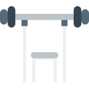

It is highly recommended that on a ketogenic diet, you keep your carb intake to 5% or less of
total calories. This works out to be an average of 20g net carbs a day.
Protein shouldn't be over-consumed on a ketogenic diet. If too much is eaten, it could lead to
slower weight loss and smaller levels on ketones in the blood.
If you're sedentary, we suggest between 0.6g and 0.8g protein.

If you're active, we suggest between 0.8g and 1.0g protein

If you lift weights, we suggest between 1.0g and 1.2g protein.